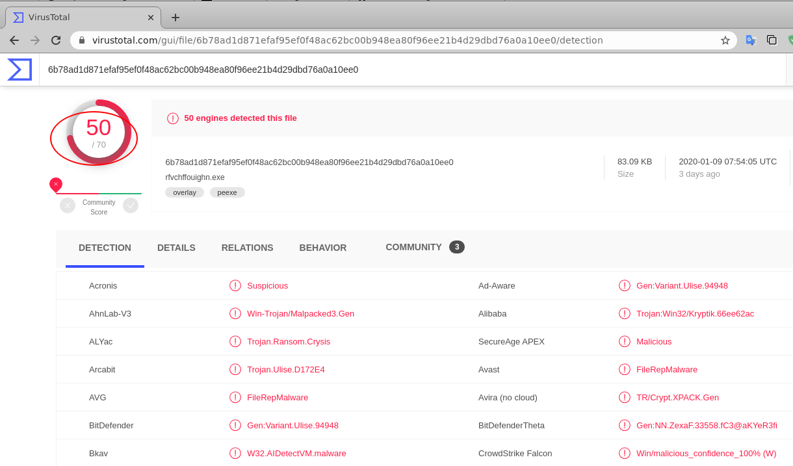
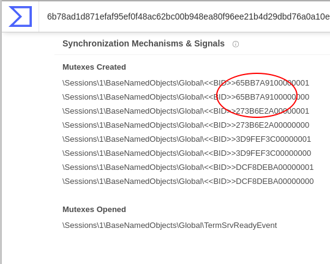
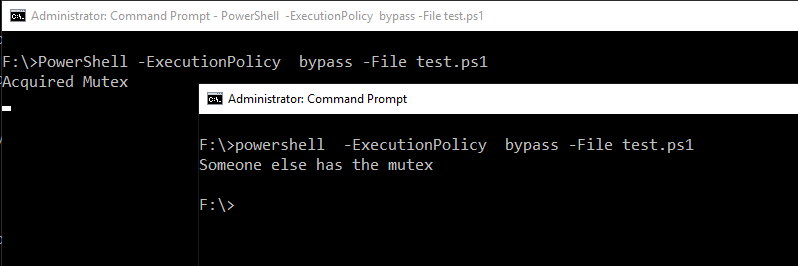
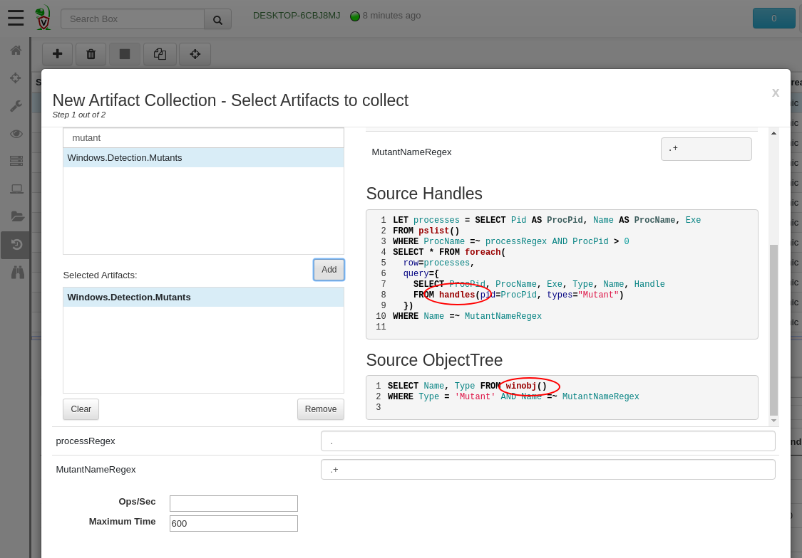
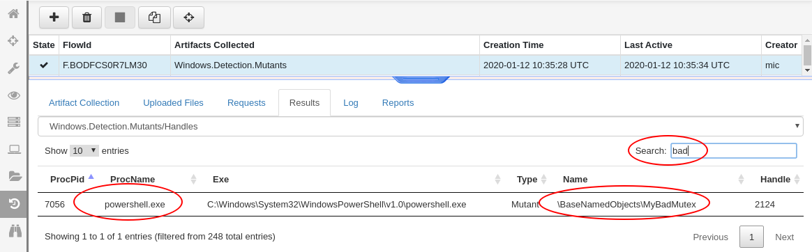
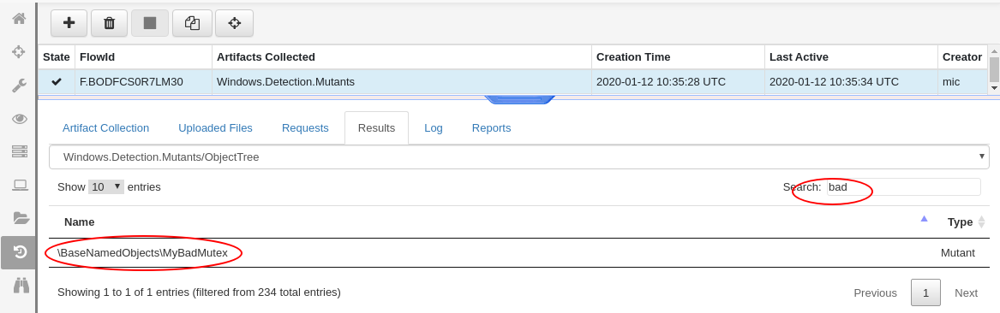
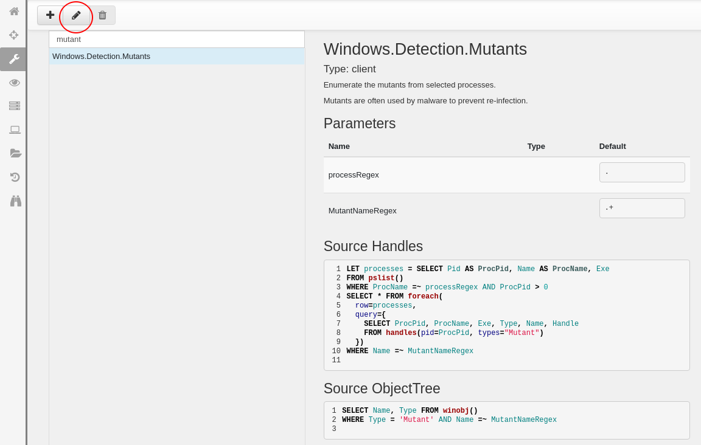
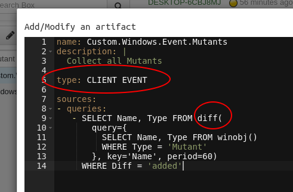
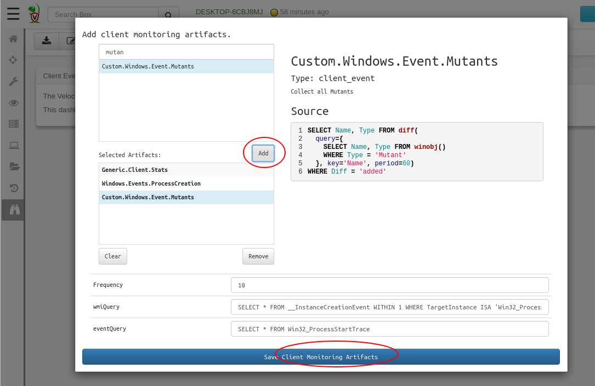
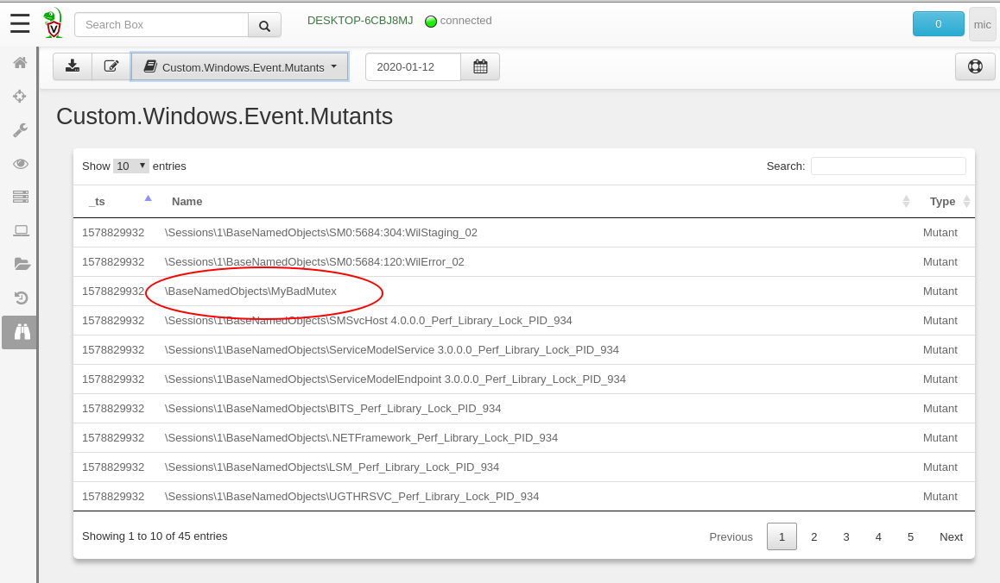

Recently Velociraptor has gained some interesting process analysis features. This is the first in a series of short articles discussing how you can use these new features to inspect suspicious processes on your endpoint and hopefully catch malware before it can gain a long term foothold.
This article will focus on windows Named Mutex Objects (On windows these are called Mutant Objects for some reason).
What is a Mutant? In the Windows world, a Mutant is a kernel object which allows programs to synchronize events between them. Malware often uses a named Mutant to ensure it does not re-infect the same machine and only run a single copy of the malware.
For example, consider malware which is delivered via a malicious word document. Each time the document is opened, the malware may unnecessarily reinfect the machine, increasing its chance of detection. To avoid this, the malware attempts to open a named mutex with a predetermined hard coded name. If the CreateMutex call succeeds then the malware can continue to run. If the call fails it is most likely because another copy of the malware is already running, therefore the malware will exit.
The actual name of the mutant is randomly chosen but typically predictable. Many malware variants hard code the name (more on this below). Services such a Virus Total and malware classification and analysis systems will often record the names of the created Mutex objects in their analysis. For example consider the following hash I grabbed in random from the OSINT thread feed at https://osint.digitalside.it/Threat-Intel/digitalside-misp-feed/5e1533e4-bb94-4c3f-82c2-2263c0a8018c.json . This particular alert concerns a specific malware detected by VirusTotal.

It looks pretty nasty. VirusTotal also documents some interesting behavioral characteristics. Specifically we see the malware creates a bunch of Mutex objects with specific names

We can use this information to hunt for the specific mutexes in our environment to check if the malware is installed anywhere. Even if we don’t get a hit right away, it is still useful to collect all the Mutant objects on our endpoints anyway and record them for historical purposes — we can then routinely run known bad mutant names against our historical record to detect past compromises we may not have been aware of.
Let’s emulate the behavior of a typical rootkit malware. The following simple PowerShell script simply tries to acquire a global mutant and if successful proceeds to sleeping for some time. If the script is unable to acquire the mutant, it will simply exit.
Lets test this script — the first time it is run from one terminal the mutant is acquired. If run again the script is unable to obtain the mutant and simply exits after printing a message.

Velociraptor has an artifact specifically designed to collect Mutants from Windows endpoints. Let’s take a closer look at the VQL behind the Windows.Detection.Mutants artifact

The artifact actually offers two methods for collecting Named Mutex objects:
Collecting via the handles() VQL plugin will enumerate all open handles for each process and filter out only the Mutant handles.
Using the Kernel Object Tree, the **winobj() **VQL plugin enumerates the kernel’s object namespace.
Let’s see what this artifact returns (I will filter the GUI to only show the Mutant we created to avoid confusion, since there are typically many Mutants on a real system created by legitimate software). The following figures show the bad mutant as discovered via the two supported methods
Mutant discovered by the handles() plugin method
Mutant discovered by inspecting the Windows Object Namespace
Clearly enumerating the handles of each process is much more useful — we can tell the process that actually holds the mutant handle (which in practice would be the rootkit process itself — or the host process in case of dll injection). Enumerating the kernel’s object namespace does not actually reveal a lot of context information but does positively identify the mutant’s presence. (The entire collection took around 6 seconds most of the time was spent enumerating all process handles).
In practice enumerating the handles of all running processes is much more expensive than simply enumerating the kernel’s namespace. Usually we just want to confirm or deny a specific Mutant name (which might appear in our threat intelligence stream) and for this it is sufficient to enumerate the kernel’s object namespace. Additionally, Velociraptor is unable to attach to some processes in order to enumerate their handles (e.g. system level processes) so it is not always able to get all handles. However, enumerating the kernel’s object namespace works better.
While hunting for mutants periodically across the network is not too difficult (simply schedule a hunt for the Windows.Detection.Mutants artifact) what would be really nice is to get a continuous live stream of mutants as they appear on the endpoint. This is a classic example of turning a Velociraptor artifact into a monitoring artifact.
I will start off by reusing the **Windows.Detection.Mutants **artifact. I will only use the method which enumerates the kernel namespace via the winobj() VQL plugin — first I search for it then click the edit button.

I will change the type of the artifact to CLIENT_EVENT — this will allow Velociraptor to run it as a monitoring artifact on the endpoint.
What I actually want to collect are names of new mutant objects as they are created. I will enumerate the mutants periodically and then simply send the new mutants that appear since the last time as events to the server.
The diff() VQL plugin is perfect for this — the plugin simple runs a query periodically (e.g. every minute) then emits the rows which have been added or removed from last time.

Now I will simply add the monitoring artifact to the client’s event monitoring table. This will get the endpoint to sync its monitoring artifacts and begin watching for new mutants.

A short time later, the events begin flowing to the server. I will run my PowerShell script to generate some bad mutant names and watch it in the GUI

Once the event monitoring queries are synced with the client, the client will continue monitoring for new mutants — event when the endpoint is offline! The events will simply be queued on the endpoint until such time it can deliver them to the server.
Conclusions
In practice this is only a part of a larger solution. The mutants we collect from the endpoint are simply collected in the Velociraptor data store as large CSV files. It is possible to quickly search them (e.g. with a yara rule) and determine if any of the endpoints have a particular mutant name. For example if you have a threat feed with mutant names you may simply scan over all your historical files periodically.
Alternatively you can forward these events to a SIEM or Elasticsearch for easier integration with existing tooling (See Velociraptor to Elastic). Velociraptor’s role is simply to collect the data — indexing and searching is left to you.
Hunting based on mutant name is an old technique and many new malware tools have adapted to produce semi-random mutant names, unique for each machine (e.g. they might hash the hostname to get a unique but stable mutant name). By collecting mutant names from all machines in your deployment you might be able to identify suspicious names even if they are unique.
Have you had much success hunting malware based on mutant names? Add your comments below to share your experiences…